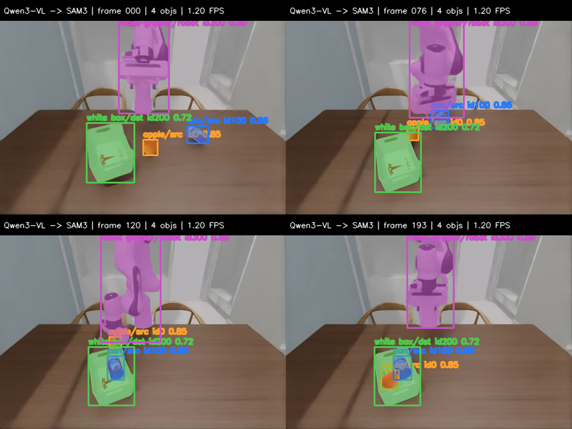
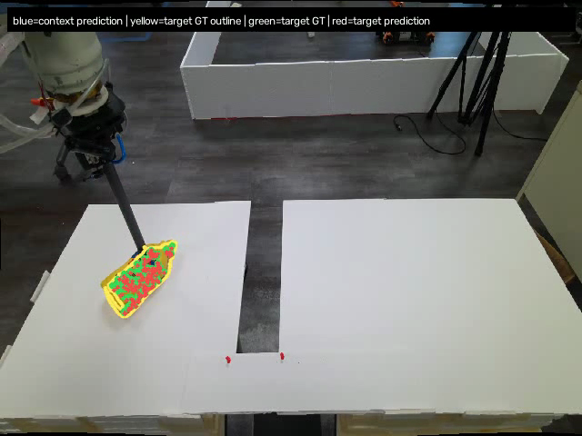

Method at a glance
How it works
- 01ReconstructStart from OpenD4RT’s 4D visual representation.
- 02PredictAdapt it to predict future key-object features.
- 03Condition actionsStudy a feature interface to DynamicVLA.
- 04Ground & assessExplore InstructD4RT; stop after generalization limitations.
Project workflow schematic.
Problem and research direction
A dynamic manipulation policy must reason about objects that move while the robot is observing and acting. Images and language alone do not expose a persistent, explicit representation of which surface points belong to the target or how those points move over time. D4rtVLA explores whether a 4D reconstruction-and-tracking model can supply that missing structure.
The main idea was to adapt and train OpenD4RT beyond reconstruction: predict the future features of important objects in a world-model-like way, then make those features available to the VLA policy for action generation. This predictive objective was the central research direction, not only an offline feature-extraction pipeline.
The working hypothesis is to connect task-relevant object motion features to action generation without replacing the pretrained VLA policy. This remains a research question: an implemented conditioning path and lower errors in a small pilot do not by themselves establish better robot task success.
4D tracking diagnostics
These diagnostic runs compare the released OpenD4RT model’s predicted object points with ground truth on HO-3D and YCBInEOAT. They illustrate the tracking and geometry stage investigated by the discontinued prototype.
My contribution
I adapted and trained the OpenD4RT-based future key-object feature predictor and investigated its interface with a VLA action generator. Later, I borrowed the instruction-grounding idea from InstructSAM to build InstructD4RT, with the intention of combining it with D4rtVLA.
I developed the integration around the existing DynamicVLA and OpenD4RT models: instruction-conditioned object/mask preparation, accepted-feature sidecars, action-time alignment, multi-view and object-role embeddings, batch-local token padding, and the attention adapter. I also built reproducible dataset subsets, normalization and split checks, paired ablation tools, and visual tracking diagnostics.
A substantial part of the work was defining reliable interfaces between perception and control. Missing or rejected masks must not silently become valid conditioning tokens; source objects, destinations and candidate sources must retain distinct identities; and the same sampled point must stay aligned across pixel coordinates, decoder features and future 3D pseudo-labels.
Architecture: 4D features inside a flow-matching policy
The project had two related development stages: future key-object feature prediction using an adapted OpenD4RT model, and policy-side conditioning experiments using a DynamicVLA adapter. The offline sidecar implementation described below is one prototype path; it should not be confused with a completed online future-prediction policy.
The policy retains DynamicVLA’s flow-matching action generator. A 16-layer action expert alternates eight joint self-attention layers with eight cross-attention layers. It predicts a 16-step action chunk, each step containing translation, rotation and gripper commands.
In the offline adapter prototype, OpenD4RT decoder features have 1,280 channels. A shared learned projection, view embedding and role embedding turn them into policy tokens; each cross-attention layer has its own key/value projections. Action query t attends only to the object-point features aligned with that future step, rather than a flattened memory of every future time. A negative initial attention bias keeps the new memory nearly closed at initialization.
The extra features enter the existing cross-attention memory alongside visual, language and robot-state features. They do not create an additional action-attention block. OpenD4RT and segmentation are run offline to prepare detached sidecars, while the policy learns the adapter and action-conditioning path. The stored 3D trajectories are pseudo-labels, not ground-truth robot action supervision.
Datasets and reproducible experiments
The prototype uses DOM dynamic-manipulation data and an extended DOM-Plus workflow. I prepared a 2,080-episode DOM subset with 1,664 training, 208 validation and 208 test episodes, consistent reindexing and training-only normalization. Its per-source-chunk split is an IID diagnostic split, not evidence of unseen-task generalization.
A later DOM-Plus setup uses a frozen 80-episode generation-complete snapshot with a task-stratified 64/8/8 assignment. Every raw frame remains a policy sample: frames without accepted guidance take the baseline path. Paired training shares each sample batch and flow-matching noise/time draw across both conditions, which isolates the effect of feature injection more carefully.
What the experiments show
Tracking and action generation are assessed separately. Saved YCBInEOAT and HO-3D diagnostics compare predicted object-pixel tracks with corresponding ground truth; they are evaluation of the tracking component, not robot rollouts. Offline policy evaluation excludes padded action steps and reports overall, translation, rotation and gripper L1/MSE.
Results were mixed. In one archived 31/4/4-episode train/validation/test comparison, guidance slightly improved validation action L1 but worsened held-out test action L1. Earlier smaller pilots therefore cannot support a broad improvement claim. Stricter accepted-mask schemas also superseded historical feature sets, making data-version consistency part of the evaluation problem.
InstructD4RT and the decision to stop
The later InstructD4RT branch borrowed from InstructSAM to make key-object grounding depend on the instruction. It was intended to provide task-relevant information for the D4rtVLA pipeline. I stopped the direction after finding that InstructD4RT did not generalize sufficiently. The project is therefore a discontinued research prototype, not an active project awaiting deployment.
There were also engineering and evaluation limits: the offline feature pipeline could use future frames from prerecorded clips, streaming inference was not completed, and the retained ablations did not establish a consistent held-out action-prediction advantage. The useful outcome was a clearer understanding of the grounding and generalization requirements for connecting 4D perception to robot action.
This work followed the ManipArena competition within the same TUM research setting. In September 2026, I moved to RoleWAM, investigating task-role representations and joint attention rather than continuing this prototype.
Project visuals




Original documents
Project reports, theses and retained presentations in their original language. Presentations are provided as static PDF exports; personal identifiers are removed where necessary.
Reading notes · PDF export
D4RT query-network reading slides
Literature-reading slides, separate from the prototype’s own experimental results.
Reading notes · PDF export
DynamicVLA and DOM reading slides
Literature-reading slides, separate from the prototype’s own experimental results.
Related resources
- D4RTOriginal dynamic-scene reconstruction and tracking method.
- OpenD4RTThird-party PyTorch implementation used for feature extraction.
- DynamicVLAUnderlying flow-matching policy.
- DOM dataset
Based on my prototype implementation, saved perception and action diagnostics, and the subsequent decision to discontinue the InstructD4RT direction. No closed-loop policy improvement is claimed. Updated November 2026. The retained OpenD4RT query-network and DynamicVLA/DOM reading decks were also checked as literature context; their baseline figures and reported results are not attributed to this prototype. The early research chronology was also checked against the shared Dart-VLA meeting notes from June 2026. Tracking videos come from the retained HO-3D MC6 and YCBInEOAT mustard0 diagnostic runs and retain their original overlays and timing.